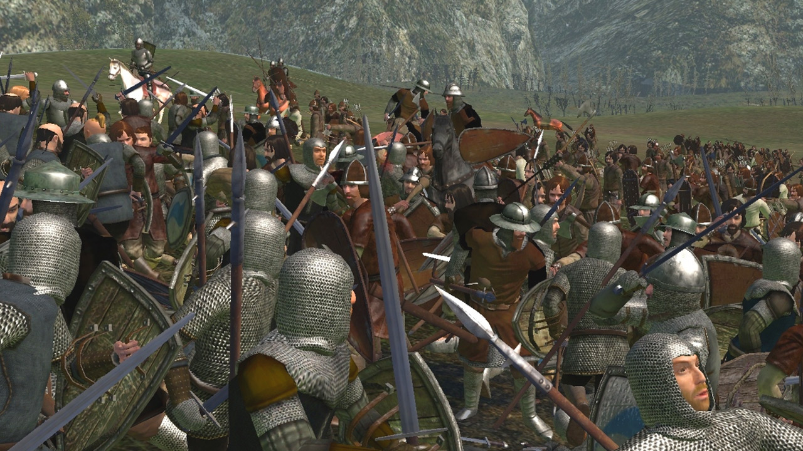
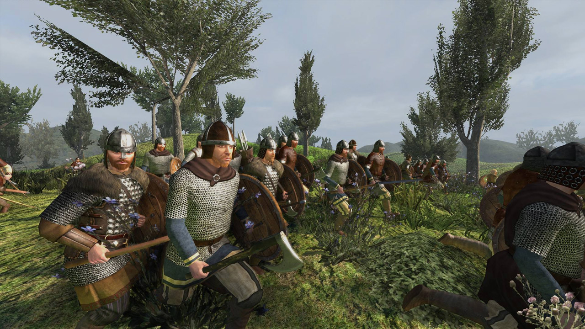

The Basics of Soldiering

"England, give thanks to God for victory!
Our King went forth to Normandy
with grace and might of chivalry.
There God for him wrought marvelously;
wherefore England may call and cry:
Give thanks to God!
— Lyrics of the song "Agincourt Carol."
Getting started in Mount & Blade: Warband means stepping into a world that blends open-world freedom, medieval warfare, and role-playing in a way almost no other game does. The premise is simple but powerful: you’re a lone adventurer in 13th-century Calradia, free to carve out whatever life you want — a mercenary, a merchant, a warlord, a king, or even a roving bandit. This sense of agency is the heart of Warband, and your first hours lay the foundation for how your story will unfold.
The game's possibilities for immersion start right at the beginning during character creation, wherein the player can choose their character's background and past experiences which can play a crucial role later on when interacting with the characters and factions of the world, both positively and negatively.
Your journey begins at character creation, and this is one of the most important and often underrated parts of getting started. Warband allows you to pick your childhood, adolescent training, and your reason for coming to Calradia, each of which shapes your early skills and affects how certain NPCs treat you. That means if you want to start strong in combat, you may choose a warrior-focused upbringing; if you want to build a trade empire, a merchant background will serve you better. Even before you fight your first battle, Warband is already asking you: what kind of life do you want to build?

Once you enter Calradia, the world does not wait politely for you to get ready, and that’s intentional. Warband is at its best when you’re juggling survival, ambition, and opportunity. You begin with only your equipment and a few coins, and the early game is aSbout scraping together enough gold and manpower to survive encounters with bandits while slowly assembling your first warband. Starting small is normal: recruit villagers, take simple mercenary jobs, escort caravans, or hunt looters to gain money and experience. The game thrives on immersing you in its grounded, harsh medieval atmosphere.
The land forever on the brink. Its borders pressed by raiders, its roads stalked by outlaws, and its kingdoms locked in a ceaseless dance of war and diplomacy. Every lord you meet has a history, a grudge, a reputation, and a dream he desperately wants to see fulfilled. Some seek glory, others wealth, and a few simply wish to burn their enemies' fields to ash. As you travel from town to town, you will hear whispered rumors in taverns, see villages still smoldering from last night's raid, and watch armies march across the plains. It is in this living world that your story must find its place. Whether you fight for honor, profit, or the simple thrill of battle.
And though you begin alone, every soldier you command, every village you help, and every king you swear fealty to strengthens your mark on Calradia. The land remembers its heroes as well as its tyrants. As your renown spreads, lords will treat you with newfound respect or envy, factions will pull you into their intrigues, and battles that were once too dangerous to consider for your forces will now become opportunities for glory. In time, the world will no longer ignore your presence and instead it will orbit around it.
Calradia is divided into several competing kingdoms, each with its own strengths, weaknesses, troop roster, terrain advantages, and political personality. Joining or opposing a faction is more than a military choice as it affects your income, your allegiances, the enemies you make, and the opportunities available to you. Lords will judge you based on your reputation with their realm, and kings will only trust you with land and responsibility if you prove both loyalty and competence on the battlefield.
Every action you take shapes how factions respond to you. Fighting alongside a kingdom's forces improves your relations, while raiding their villages or attacking their caravans turns them into lifelong enemies. Renown, gained through winning battles, determines how seriously nobles take you. High renown convinces kings to grant you fiefs, while low renown makes you forgettable and expendable. Honor also plays a role: honorable lords respect honorable players, while treacherous lords prefer someone ruthless and willing to carry out their acts of war without asking questions.
Each faction has unique troops that excel in different roles. The Vaegirs bring deadly archers and strong infantry, while the Swadians boast elite knights capable of crushing most armies on open fields. The Nords dominate in sieges with their strong infantry, the Rhodoks counter cavalry with spearmen and crossbowmen, the Khergits use horse archers to wear enemies down, and the Sarranids balance mobility and versatility. Understanding these strengths helps the player build a warband suited for the challenges they expect to face.
Once the player is strong enough, they may swear allegiance to a king and become a vassal, earning land, taxes, and influence. As a vassal you participate in wars, vote on who receives newly conquered fiefs, and gain (or lose) standing among the lords. However, Warband also allows the player to break free and establish their own kingdom. Rebellion is difficult, but if successful, you can become the ruler of the land and shape the world using diplomacy, marriage, alliances, or brute force.